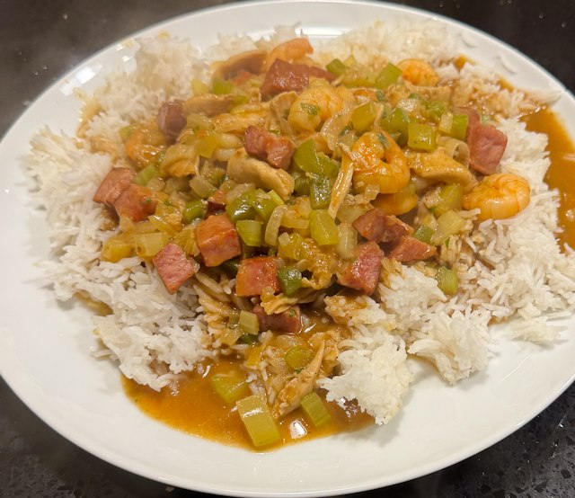

Gumbo

From Tastes Better from Scratch. Serve with rice.
Ingredients
- Roux
- 125g flour
- 150ml sunflower oil
- Stock
- 1.5 litre water
- 2 chicken stock pot
- Meat
- 1 chicken, cut to breast, wing, leg, thigh
- 350g andouille or kielbasa sausage, cubed
- 250g prawns
- Veg
- 1 bunch celery, dice
- 1 green pepper, dice
- 1 onion, chopped
- 1 bunch spring onion, chopped
- 1 bunch parsley, chopped
- 3 garlic cloves, sliced
- 2 tbsp cajun seasoning
Method
Stock. Heat 1.5 litre water and add the two stock cubes, keep warm.
Chicken. Place on tray with olive oil, salt and pepper. Cook in oven on 180°C fan for 45 min. Add juices to the stock. Allow to cool, and tear into bits.
Sausage. Fry in pan, allowing fat to render, and sausage to get a bit crispy. Deglaze pan with water and add to stock.
Roux. In a large casserole dish, cook roux on medium to low heat stirring constantly for 30-45 min. The roux gradually darkens, and when finished should be as dark as chocolate. Be careful not to let it burn, especially near the end.
Assemble. When the roux is ready, pour in the hot stock, whisk and bring to the boil. Add the veg, cajun seasoning, and cook for 5 min or so. Then add the sausage, chicken, prawns and warm though.